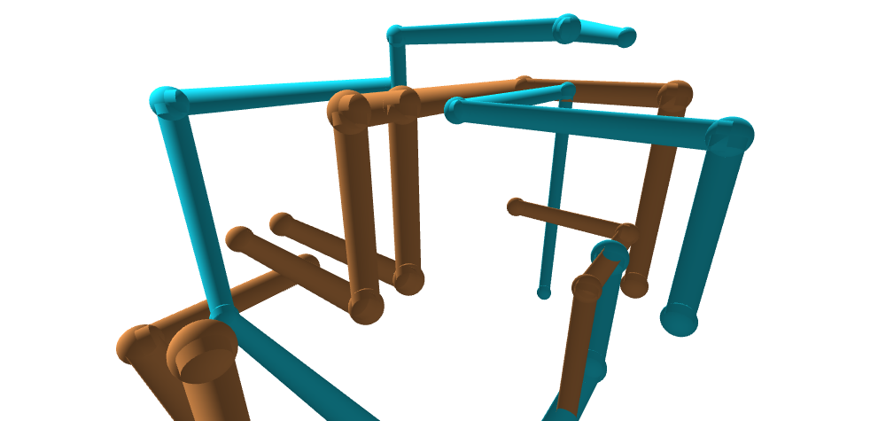

Not much to write yet. This one was a small experiment: how far can a plain static page go on performance, and can it bring back the feeling of watching the XP pipes screensaver.

The screensaver was never about the pipes. It was about sitting there while they grew, turned and eventually filled the screen. So the brief was the behaviour, not a copy of the pixels: copper and cyan, glossy tubes, elbow balls, and a camera that drifts rather than demands attention.
Rule: recreate how it felt to watch, not just how it looked.
A few thousand lit, smooth tubes is a lot for a page with no dependencies. Every pipe segment is a single instance of one shared mesh, so the whole scene is two draw calls however full it gets. If frames run slow, the pixel ratio drops on its own, and the loop stops when the tab is hidden.
There is an FPS readout (the FPS button, or P) so I can check it on real devices instead of guessing. I haven't tested it widely yet.
Rule: measure it, don't assume it.
It shares the capes lab's sparse star field, minus the shooting stars, so the two sit together as one set. Copper and cyan are just the default: a few other palettes are a tap away.
Rule: keep the experiments in one world.